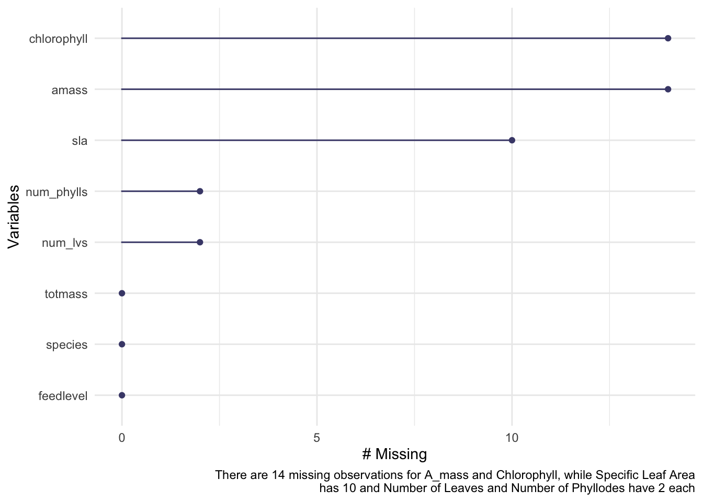
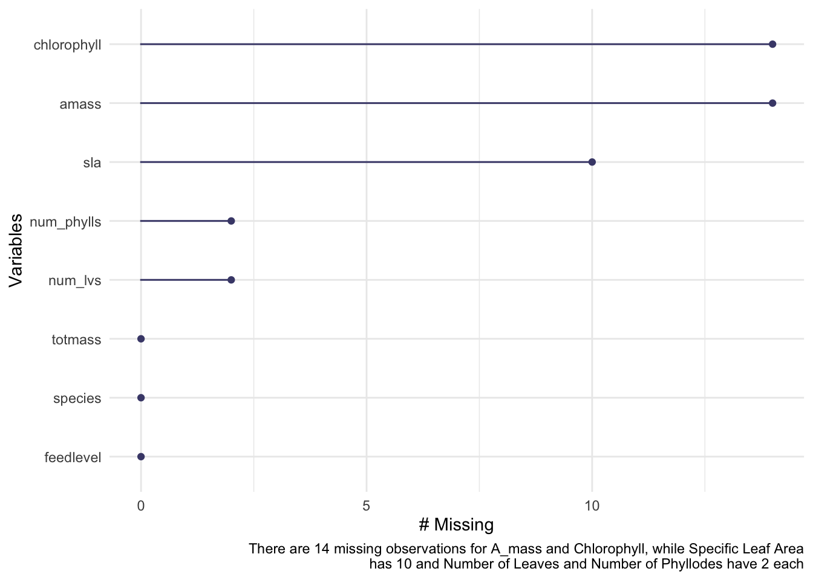
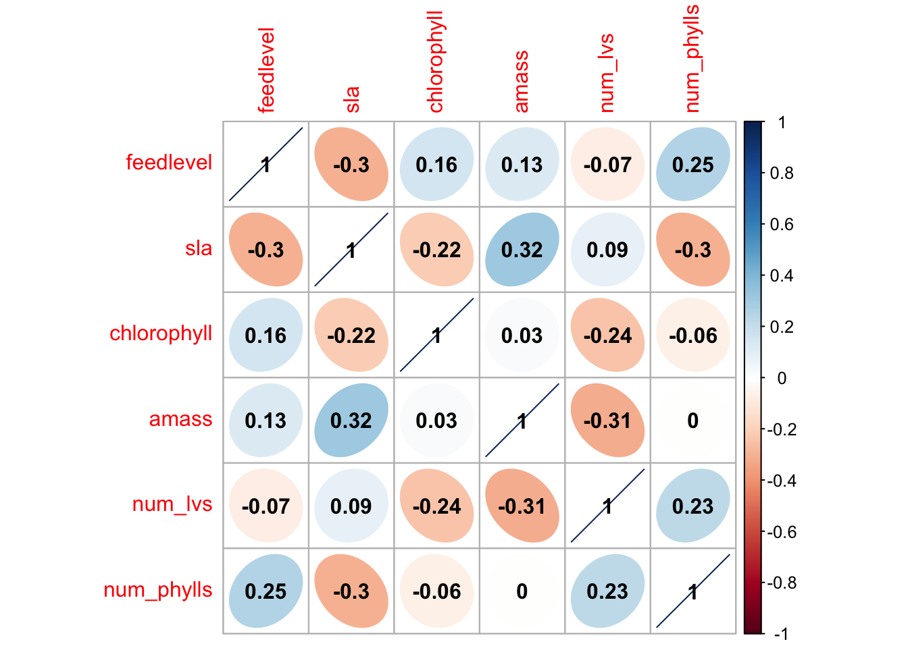
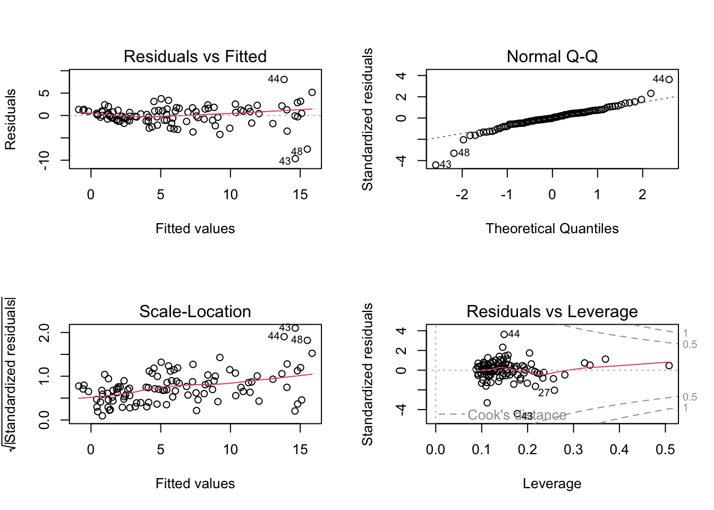

Code
gg_miss_var(plant) +
labs(caption = "There are 14 missing observations for A_mass and Chlorophyll, while Specific Leaf Area
has 10 and Number of Leaves and Number of Phyllodes have 2 each")
Sarracenia is a genus of pitcher plants that is found in the southeastern United States (Ellison et al. 2004). These carnivorous plants are particularly sensitive to nitrogen availability, which has been increasing in the atmosphere due to anthropogenic activities (Ellison and Gotelli 2002). A certain species of this plant could be a useful tool to measure nitrogen deposition rates (Ellison and Gotelli 2002). Carnivorous plants need significant leaf area to capture prey, since they get certain nutrients from prey that other plants get in other ways (Farnsworth and Ellison 2007). This study was interested in the effects of prey availability on maximum mass-based photosynthetic rate, or Amass. The hypothesis being tested in this experiment is that “increased prey availability would stimulate Amass of one or more leaves, increase photosynthetic N- and P-use efficiencies (PNUEN, PNUEP), increase relative biomass allocation to photosynthetically efficient, non-predatory phyllodes rather than pitchers, increase overall plant biomass, and reduce stress-related chlorophyll fluorescence.” [(Farnsworth and Ellison 2007).
Twelve plants of each species were chosen at random for this experiment, totaling 120 plants that were each 6 years old (Farnsworth and Ellison 2007). For each plant, the species, total mass, feed level, specific leaf area, chlorophyll A and B content, mass-based photosynthetic rate, total number of leaves, and number of phyllodes were documented. This data was organized into a table with each of these variables having their own column.
Missing observations are as shown in the figure below. These values were removed before analysis was conducted. There aren’t that many missing observations.
gg_miss_var(plant) +
labs(caption = "There are 14 missing observations for A_mass and Chlorophyll, while Specific Leaf Area
has 10 and Number of Leaves and Number of Phyllodes have 2 each")
Next, we found Pearson’s r. To determine the relationships between numerical variables in our dataset, we calculated Pearson’s r and visually represented correlation using a correlation plot. Pearson’s r represents how strongly variables are correlated with each other. As shown, maximum mass-based photosynthetic rate and specific leaf area are the most positively correlated.
# calculate Pearson's R
plant_cor <- plant_subset %>%
select(feedlevel:num_phylls) %>%
cor(method = "pearson")
# create a correlation plot
corrplot(plant_cor,
#change the shape of what's in the cells
method = "ellipse",
addCoef.col = "black")
labs(caption = "A visual representation of Pearson's r, which shows the correlation between each variable. A higher positive number indicates a greater positive correlation, while a lower negative number indicates a greater negative correlation")$caption
[1] "A visual representation of Pearson's r, which shows the correlation between each variable. A higher positive number indicates a greater positive correlation, while a lower negative number indicates a greater negative correlation"
attr(,"class")
[1] "labels"This is a plot of how the variables relate to the other variables. This correlation matrix shows how correlated each variable is with another variable. This gives us an overview of the correlation of variables.
plant_subset %>%
select(species:num_phylls) %>%
ggpairs() +
labs(caption = "Correlation matrix showing the correlation between all variables")To determine how species and physiological characteristics predict biomass, we fit multiple linear models
This model looks to be homoskedastic and normal based on the residuals vs. fitted plot and Q-Q plot. However, this was not the case as shown in the next test.
par(mfrow = c(2, 2))
plot(full)
We used a Shapiro-Wilk test to check for normality and a Breusch-Pagan test for homoskedasticity. This model failed both, necessitating that we transform the data to fit the model. This was done by taking the log of total mass.
check_normality(full)Warning: Non-normality of residuals detected (p < .001).check_heteroscedasticity(full)Warning: Heteroscedasticity (non-constant error variance) detected (p < .001).Here are the plots after transforming the data. According to the Shapiro-Wilk and Breusch-Pagan tests this data is normally distributed and homoskedastic.
par(mfrow = c(2, 2))
plot(full_log)
check_normality(full_log)OK: residuals appear as normally distributed (p = 0.107).check_heteroscedasticity(full_log)OK: Error variance appears to be homoscedastic (p = 0.071).This is a model showing the relationship between species and total mass. It is homoscedastic and normally distributed. This data could show how total mass varies by species. The difference in total mass could be due to a variation in species.
model2_log <- lm(log(totmass) ~ species, data = plant_subset)
par(mfrow = c(2, 2))
plot(model2_log)
check_normality(model2_log)OK: residuals appear as normally distributed (p = 0.374).check_heteroscedasticity(model2_log)OK: Error variance appears to be homoscedastic (p = 0.100).This model shows the relationship between feed level and total mass. The Shapiro-Wilk test failed, which means that the data is not normally distributed, so we can’t run most tests since they assume normality. It would be interesting to see if the amount of food given to the plants could explain the difference in total mass.
model3_log <- lm(log(totmass) ~ feedlevel, data = plant_subset)
par(mfrow = c(2, 2))
plot(model3_log)
check_normality(model3_log)Warning: Non-normality of residuals detected (p = 0.018).check_heteroscedasticity(model3_log)OK: Error variance appears to be homoscedastic (p = 0.261).This model shows the relationship of the number of leaves, chlorophyll content, feed level, and species to total mass. It would be useful if we could get an accurate prediction of total mass by using less variables than in the full model.
model4_log <- lm(log(totmass) ~ num_lvs + chlorophyll + feedlevel + species, data = plant_subset)
par(mfrow = c(2, 2))
plot(model4_log)
check_normality(model4_log)OK: residuals appear as normally distributed (p = 0.078).check_heteroscedasticity(model4_log)OK: Error variance appears to be homoscedastic (p = 0.147).Next, we evaluated multicollinearity. This is to see if multiple independent variables are correlated with each other. Through this evaluation, we found that species has high multicollinearity with another variables. We know this because the variance inflation factor was high for species.
car::vif(full_log) GVIF Df GVIF^(1/(2*Df))
species 42.351675 9 1.231351
feedlevel 1.621993 1 1.273575
sla 1.999989 1 1.414210
chlorophyll 1.949828 1 1.396362
amass 2.872084 1 1.694722
num_lvs 2.813855 1 1.677455
num_phylls 2.995510 1 1.730754Comparing models: The last model (model 4) has the lowest Akaike’s Information criterion value.
AICc(full_log)[1] 133.9424AICc(model2_log)[1] 157.5751AICc(model3_log)[1] 294.978AICc(model4_log)[1] 131.3386MuMIn::AICc(full_log, model2_log, model3_log, model4_log) df AICc
full_log 17 133.9424
model2_log 11 157.5751
model3_log 3 294.9780
model4_log 14 131.3386MuMIn::model.sel(full_log, model2_log, model3_log, model4_log)Model selection table
(Int) ams chl fdl num_lvs num_phy sla spc df
model4_log -1.8700 0.004959 -0.4179 0.08526 + 14
full_log -1.3390 0.002338 0.004368 -0.4743 0.09176 -0.03959 -0.002493 + 17
model2_log 0.8836 + 11
model3_log 1.0550 1.6410 3
logLik AICc delta weight
model4_log -49.283 131.3 0.00 0.786
full_log -46.371 133.9 2.60 0.214
model2_log -66.337 157.6 26.24 0.000
model3_log -144.368 295.0 163.64 0.000
Models ranked by AICc(x) Model 4 was the best fit for the data because it had the lowest AIC value.
summary(model4_log)
Call:
lm(formula = log(totmass) ~ num_lvs + chlorophyll + feedlevel +
species, data = plant_subset)
Residuals:
Min 1Q Median 3Q Max
-0.89093 -0.19455 0.03746 0.24536 0.82010
Coefficients:
Estimate Std. Error t value Pr(>|t|)
(Intercept) -1.870225 0.543076 -3.444 0.000873 ***
num_lvs 0.085263 0.020675 4.124 8.28e-05 ***
chlorophyll 0.004959 0.001159 4.278 4.69e-05 ***
feedlevel -0.417909 0.232623 -1.797 0.075768 .
speciesalata 1.216898 0.177947 6.839 9.33e-10 ***
speciesflava 1.420467 0.190268 7.466 5.08e-11 ***
speciesjonesii 0.349206 0.197982 1.764 0.081154 .
speciesleucophylla 1.804375 0.209193 8.625 2.07e-13 ***
speciesminor 0.356718 0.187545 1.902 0.060364 .
speciespsittacina -1.670490 0.202271 -8.259 1.19e-12 ***
speciespurpurea -0.375537 0.245892 -1.527 0.130207
speciesrosea -0.921023 0.214861 -4.287 4.54e-05 ***
speciesrubra 0.920885 0.180409 5.104 1.84e-06 ***
---
Signif. codes: 0 '***' 0.001 '**' 0.01 '*' 0.05 '.' 0.1 ' ' 1
Residual standard error: 0.4177 on 90 degrees of freedom
Multiple R-squared: 0.8611, Adjusted R-squared: 0.8426
F-statistic: 46.49 on 12 and 90 DF, p-value: < 2.2e-16Model 4 takes into account number of leaves, chlorophyll content, feed level, and species. It says that these variables are good predictors of the total mass of the sarracenia plants.
ggpredict(model4_log)$num_lvs
# Predicted values of totmass
num_lvs | Predicted | 95% CI
------------------------------------
2 | 5.92 | [ 4.34, 8.09]
4 | 7.03 | [ 5.38, 9.18]
5 | 7.65 | [ 5.94, 9.85]
7 | 9.07 | [ 7.12, 11.56]
9 | 10.76 | [ 8.31, 13.93]
10 | 11.72 | [ 8.90, 15.43]
12 | 13.90 | [10.06, 19.19]
17 | 21.29 | [13.12, 34.53]
Adjusted for:
* chlorophyll = 471.29
* feedlevel = 0.18
* species = alata
$chlorophyll
# Predicted values of totmass
chlorophyll | Predicted | 95% CI
----------------------------------------
410 | 6.74 | [ 5.17, 8.78]
450 | 8.22 | [ 6.46, 10.46]
490 | 10.02 | [ 7.80, 12.88]
530 | 12.22 | [ 9.13, 16.36]
570 | 14.90 | [10.48, 21.20]
610 | 18.17 | [11.89, 27.78]
650 | 22.16 | [13.40, 36.65]
730 | 32.95 | [16.85, 64.44]
Adjusted for:
* num_lvs = 7.08
* feedlevel = 0.18
* species = alata
$feedlevel
# Predicted values of totmass
feedlevel | Predicted | 95% CI
-------------------------------------
0.00 | 9.85 | [7.58, 12.80]
0.02 | 9.78 | [7.55, 12.68]
0.03 | 9.72 | [7.52, 12.56]
0.06 | 9.59 | [7.45, 12.34]
0.25 | 8.87 | [6.97, 11.30]
0.31 | 8.64 | [6.76, 11.04]
0.50 | 7.99 | [6.08, 10.51]
1.00 | 6.48 | [4.20, 10.00]
Adjusted for:
* num_lvs = 7.08
* chlorophyll = 471.29
* species = alata
$species
# Predicted values of totmass
species | Predicted | 95% CI
---------------------------------------
alabamensis | 2.71 | [2.08, 3.52]
alata | 9.13 | [7.17, 11.64]
flava | 11.20 | [8.54, 14.69]
jonesii | 3.84 | [2.80, 5.26]
minor | 3.86 | [2.99, 4.99]
psittacina | 0.51 | [0.37, 0.70]
purpurea | 1.86 | [1.28, 2.70]
rubra | 6.79 | [5.24, 8.80]
Adjusted for:
* num_lvs = 7.08
* chlorophyll = 471.29
* feedlevel = 0.18
attr(,"class")
[1] "ggalleffects" "list"
attr(,"model.name")
[1] "model4_log"Biologically this means that the variables in model 4 can be used to predict the total biomass of this particular genus of plants.